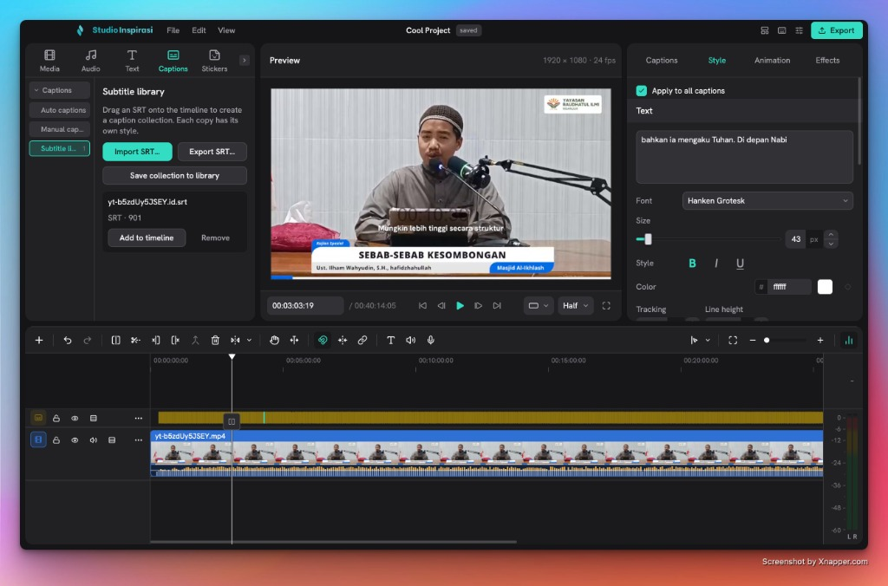

A full video editor that still runs on macOS Monterey.
Studio Inspirasi is a Clovercut fork for the Macs the official build left behind — every editor feature and all on-device AI intact on macOS 12.x, Intel.
Free & open source · no account · no watermark · everything runs locally
macOS 12.0 Monterey and newer · Intel x86_64 · AVX2 recommended

Why this fork exists
The official package needs macOS 13+. This one doesn't.
Clovercut's released macOS build is produced on much newer systems: its bundled FFmpeg
calls VideoToolbox symbols from macOS 13, ONNX Runtime and libplacebo call
std::__1::to_chars floating-point symbols that only exist in the macOS 13.3
libc++, and sherpa-onnx calls an Accelerate entry point from the same release.
On Monterey the app either fails to launch or silently disables every AI feature.
Studio Inspirasi ships a compatibility shim that supplies those symbols, so nothing
has to be turned off.
| Official Clovercut build | Studio Inspirasi | |
|---|---|---|
| Launches on macOS 12 Monterey | crashes — missing symbols | ✓ verified, 99 binaries at a 12.0 floor |
| ONNX AI (cutout, smart brush, enhance, TTS) | disabled below macOS 13.4 | ✓ enabled via compatibility shim |
| Whisper transcription speed | generic build, AVX2 off | ✓ AVX2 / FMA / F16C / BMI2 on |
| GPU & decode | — | ✓ Metal + VideoToolbox |
Everything the editor has
All of Clovercut, none of the lockouts.
Organised timeline
A fixed main track anchors the edit, with overlays, titles, captions and stickers above and audio below — the full Clovercut workflow.
AI cutout & smart brushes
ONNX Runtime loads on Monterey through the shim: background removal, SAM-powered brushes and video enhance all work offline.
On-device captions & TTS
Whisper transcription compiled with AVX2/FMA — several times faster on Broadwell+ Intel than the compatibility build — plus Chatterbox voices.
Metal & VideoToolbox
GPU compositing on Metal and hardware decode through VideoToolbox, verified on real Monterey Intel hardware.
Creative libraries
OpenGameArt, Freesound, YouTube Audio Library and GIPHY inside the editor — optional, off by default, licences respected.
Local-first, no watermark
No account, no subscription, no export watermark. Models download once, then everything runs offline on your machine.
Install
Three steps and it opens.
Download Studio-Inspirasi-0.1.9-macos-x86_64.dmg and drag the app to Applications.
Open it once the Gatekeeper way: the build is ad-hoc signed, so right-click the app → Open (or approve it in System Settings → Privacy & Security). Every launch after that is normal.
Edit. Existing Clovercut settings and downloaded models are migrated automatically on first launch.
Kept in step with upstream
New Clovercut releases land here too.
The fork tracks tulcoturo/clovercut as a git upstream. Branding is an
idempotent overlay, not a divergent edit, so merging upstream stays clean — one script
fetches, merges, re-applies the brand and the Monterey patches, rebuilds and smoke-tests.